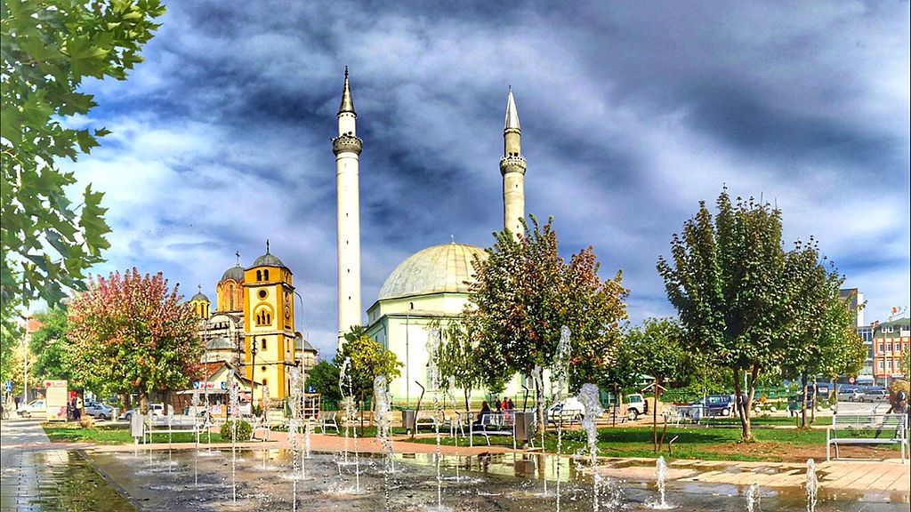
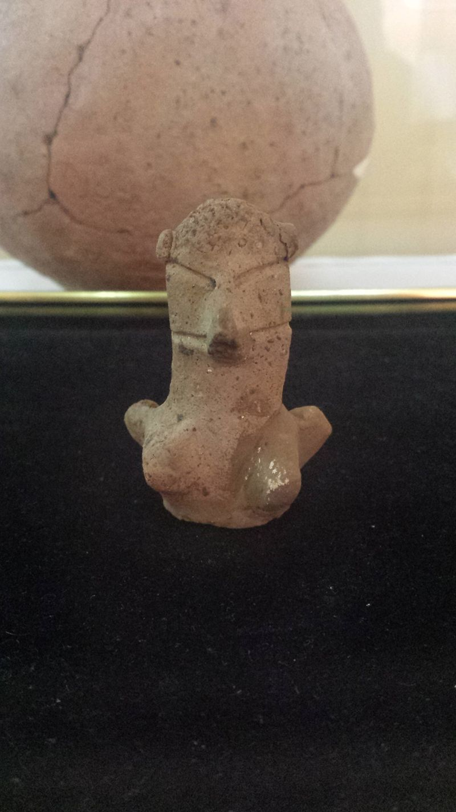
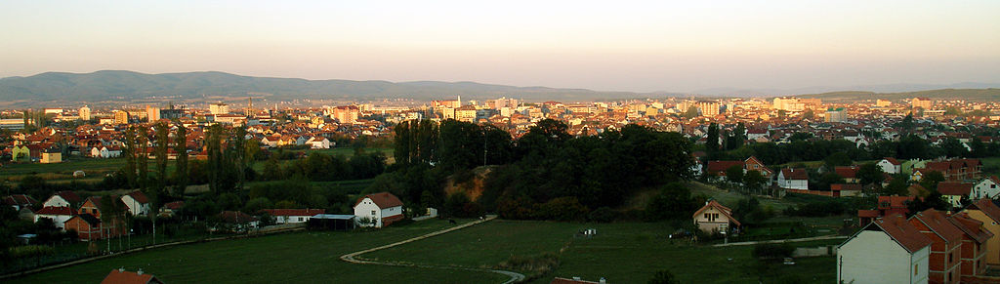
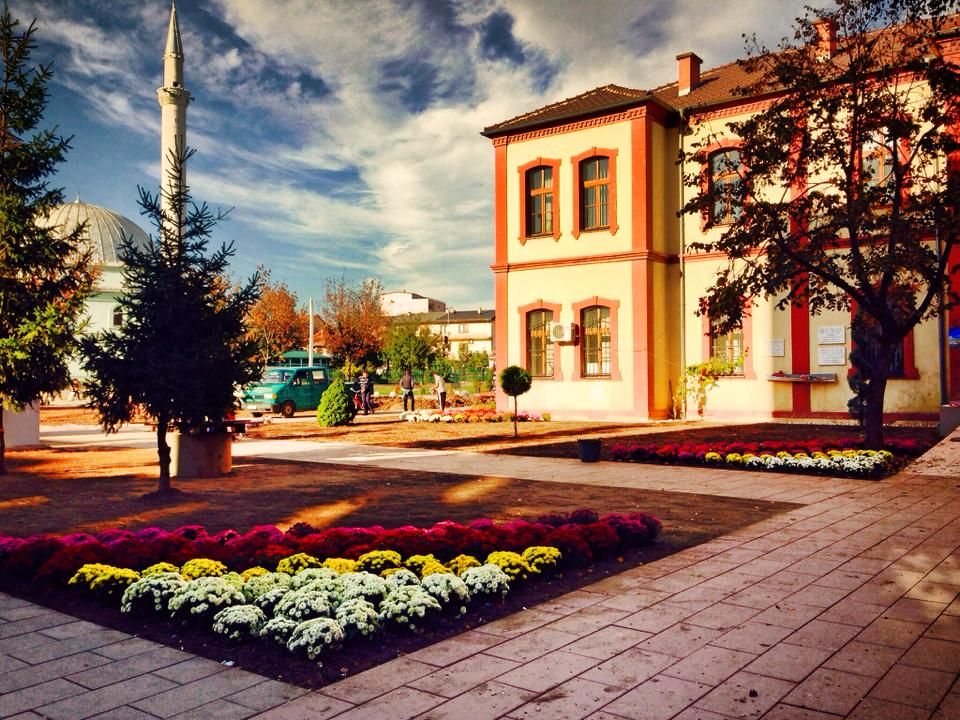

Ferizaj or Uroševac is the third largest city of Kosovo and seat of Ferizaj Municipality and Ferizaj District. Ferizaj has been populated since the prehistoric era by the Starčevo, Vinča and Baden culture. During the Ottoman period, Ferizaj served as a trading center on the route between Belgrade and Thessaloniki. Ferizaj has always been considered as a city where tolerance and coexistence in terms of religion and culture has been part of the society in the last centuries. During and after the Kosovo War in 1999, the US Army base Camp Bondsteel was established outside of the city, now being used by forces belonging to KFOR. It is the largest and the most expensive foreign military base built by the Americans in South Eastern Europe, since the Vietnam War. Ferizaj is located in the south-eastern part of Kosovo, about halfway between the cities of Pristina and Skopje. It is some 230 kilometres north-east of Tirana, 55 kilometres north of Skopje, 300 kilometres west of Sofia, 35 kilometres south of Pristina and 300 kilometres east of Podgorica. Ferizaj is also famous for a geographic phenomenon known as river bifurcation. The Nerodimka river is divided in two branches and they end up on two different seas.


The oldest group who lived in the 6th and 5th millenniums BC in the territory of Kosovo was the Starčevo culture Members of this group constructed their homes near rivers and the river terraces. They made their homes of willows and mud, while their main profession was plowing and farming. In the next archaeological period, the Vinča culture developed in some parts of Kosovo. These population shifts were made around 4300 BC. The newcomers also built their habitats near rivers. These habitats were unfortified, with dense rows of willows and mud houses. Remnants of their material culture, mostly different forms of ceramic vessels and the large numbers of baked clay figures, testify on a higher cultural level. After Starčevo and Vinča, the Bubanj-Hum culture followed. This cultural group expanded from the east, from the territory of today's Bulgaria. When carriers of this ethno-cultural group reached the region before the end of the 6th millennium BC, they destroyed Vinča habitats. Remnants of their material culture have not survived. After Bubanj-Hum, the Baden culture arrived from the Danube, representing its southernmost influence in Kosovo. Baden culture ended before the end of the 3rd millennium BC. Starting from the 8th century BC and then during the next centuries, until the Roman conquest, can transmit continuously development of a new culture in the region, the Dardanian tribe. The Dardanian burned their dead and bury their remnants in tumuli tombs. In the city, two necropoleis have been found, one in the locality of Kuline near the railway station in Gërlicë, the other in region of Mollopolc, along the Ferizaj-Štimlje road.Ferizaj is located in the south-eastern part of Kosovo, about halfway between the cities of Pristina and Skopje. It is some 230 kilometres north-east of Tirana, 55 kilometres north of Skopje, 300 kilometres west of Sofia, 35 kilometres south of Pristina and 300 kilometres east of Podgorica.
The US company Brown & Root, involved in building Camp Bondsteel, it employs over 1,500 people locally. Most of the twenty-two publicly owned enterprises have been privatized. According to Ministry of Trade and Industry statistics, more than 10,500 private small and medium-sized businesses registered in the municipality. As there is no reliable data, it is not known how many individuals are employed in the private sector.
According to the last official census done in 2011, the city of Ferizaj has 108,610 inhabitants. Based on the population estimates from the Kosovo Agency of Statistics in 2016, the municipality has 102,517 inhabitants. The exact figure for the municipality's population can only be estimated, as the most recent census took place in 1991. However, in 2015 municipal authorities estimated the population at 108,610. The majority, roughly 100,000, are Kosovo Albanians. The others were: Ashkali (3,500), Roma (200), Gorani (150), Bosniak (60), and other communities (40), including Turks.

The Big Mosque of Mulla Veseli built in 1891, and the St. Uroš Orthodox Cathedral in the centre of Ferizaj are considered symbolic of religious tolerance between Muslim Albanians and Christian Serbs. Because the mosque and the church are next to one another, many people like to take photos of them. The mosque was destroyed during World War II, but then rebuilt. During the Kosovo War in 1999 neither were destroyed, but in March 2004 during unrest in Kosovo, the church was attacked. The development of art and culture in Kosovo is closely related to the cultural and artistic society (CAS). The composer Lorenc Antoni lived in Ferizaj in the early 40s, and the composer Venqenc Gjini from Ferizaj has also made many contributions to culture and is respected countrywide, especially for his creative idioms inspired by the popular fountain. Ferizaj is also famous for its Ensemble of Song and Dance "Kastriotët", which was founded in 1967.
There are 39 primary schools in the municipality and 20,492 students. Eight secondary schools include gymnasium and professional schools (technical, medical, music, agricultural and economics) with 6,127 students in total. The school attendance of the Ashkali, Roma and Gorani children is lower than the Kosovo Albanians. There is also one kindergarten with a total of 270 children registered. The Municipal Department of Education and Science has more than 1,680 professional and support staff, including 10 minority communities representatives.[23] The city has one public library, where students also have internet access. Membership prices are reasonable. ^